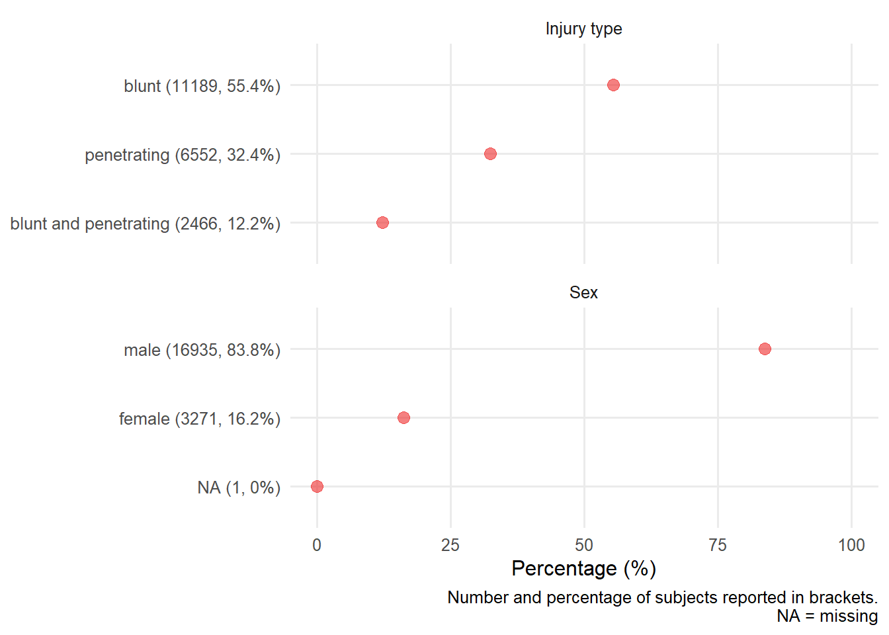
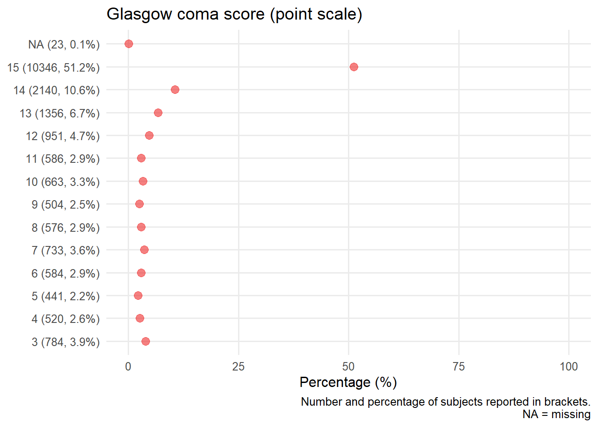
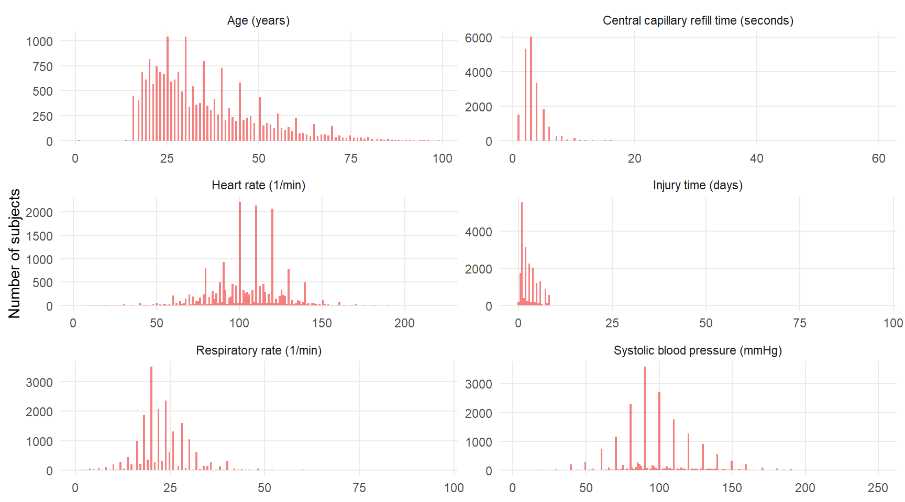

Chapter 7 Univariate distributions
Univariate summary CRASH-2 dataset
7.1 Data set overview
Using Hmisc describe function, provide an overview of the data set is provided including histograms of continuous variables.
7.1.1 Demographic variables
TODO: Should we plot the maringal distribution of the outcome?
2 Variables 20207 Observations
age: Age years

| n | missing | distinct | Info | Mean | Gmd | .05 | .10 | .25 | .50 | .75 | .90 | .95 |
|---|---|---|---|---|---|---|---|---|---|---|---|---|
| 20203 | 4 | 84 | 0.999 | 34.56 | 15.55 | 18 | 19 | 24 | 30 | 43 | 55 | 64 |
sex: Sex
| n | missing | distinct |
|---|---|---|
| 20206 | 1 | 2 |
Value male female Frequency 16935 3271 Proportion 0.838 0.162
7.1.2 Pyhisological measurements
5 Variables 20207 Observations
sbp: Systolic Blood Pressure mmHg

| n | missing | distinct | Info | Mean | Gmd | .05 | .10 | .25 | .50 | .75 | .90 | .95 |
|---|---|---|---|---|---|---|---|---|---|---|---|---|
| 19887 | 320 | 173 | 0.989 | 98.45 | 27.86 | 60 | 70 | 80 | 95 | 110 | 130 | 143 |
hr: Heart Rate /min

| n | missing | distinct | Info | Mean | Gmd | .05 | .10 | .25 | .50 | .75 | .90 | .95 |
|---|---|---|---|---|---|---|---|---|---|---|---|---|
| 20070 | 137 | 173 | 0.996 | 104.5 | 23.38 | 70 | 80 | 90 | 105 | 120 | 130 | 140 |
rr: Respiratory Rate /min

| n | missing | distinct | Info | Mean | Gmd | .05 | .10 | .25 | .50 | .75 | .90 | .95 |
|---|---|---|---|---|---|---|---|---|---|---|---|---|
| 20016 | 191 | 68 | 0.99 | 23.06 | 7.052 | 14 | 16 | 20 | 22 | 26 | 30 | 35 |
gcs: Glasgow Coma Score Total points

| n | missing | distinct | Info | Mean | Gmd | .05 | .10 | .25 | .50 | .75 | .90 | .95 |
|---|---|---|---|---|---|---|---|---|---|---|---|---|
| 20184 | 23 | 13 | 0.863 | 12.47 | 3.594 | 4 | 6 | 11 | 15 | 15 | 15 | 15 |
Value 3 4 5 6 7 8 9 10 11 12 13 14
Frequency 784 520 441 584 733 576 504 663 586 951 1356 2140
Proportion 0.039 0.026 0.022 0.029 0.036 0.029 0.025 0.033 0.029 0.047 0.067 0.106
Value 15
Frequency 10346
Proportion 0.513
cc: Central Capillary Refille Time s

| n | missing | distinct | Info | Mean | Gmd | .05 | .10 | .25 | .50 | .75 | .90 | .95 |
|---|---|---|---|---|---|---|---|---|---|---|---|---|
| 19596 | 611 | 20 | 0.945 | 3.267 | 1.67 | 1 | 2 | 2 | 3 | 4 | 5 | 6 |
Value 1 2 3 4 5 6 7 8 9 10 11 12
Frequency 1510 5328 6020 3367 1805 802 268 271 45 139 3 7
Proportion 0.077 0.272 0.307 0.172 0.092 0.041 0.014 0.014 0.002 0.007 0.000 0.000
Value 13 15 16 17 18 20 30 60
Frequency 3 19 3 1 1 2 1 1
Proportion 0.000 0.001 0.000 0.000 0.000 0.000 0.000 0.000
7.1.3 Characteristics of injury
2 Variables 20207 Observations
injurytime: Hours Since Injury hours

| n | missing | distinct | Info | Mean | Gmd | .05 | .10 | .25 | .50 | .75 | .90 | .95 |
|---|---|---|---|---|---|---|---|---|---|---|---|---|
| 20196 | 11 | 93 | 0.972 | 2.844 | 2.35 | 0.5 | 1.0 | 1.0 | 2.0 | 4.0 | 6.0 | 7.0 |
injurytype: Injury type

| n | missing | distinct |
|---|---|---|
| 20207 | 0 | 3 |
Value blunt penetrating blunt and penetrating Frequency 11189 6552 2466 Proportion 0.554 0.324 0.122
7.2 Categorical plots
A closer examination of the categorical predictors.

7.2.1 Cateogrical ordinal plots
The Glasgow coma score, an ordinal cateogrical variable, is also displayed seperately.

7.3 Continous plots
A closer examination of continous predictors.

There is evidence of digit preference. Explore further with targeted summaries.
More detailed univariate summaries for the variables of interest are also provided below.
7.3.1 Age
![Distribution of subject age [years]](Univar_crash2_files/figure-html/unnamed-chunk-4-1.png)
Figure 7.1: Distribution of subject age [years]
7.3.2 Blood pressure
Figure 7.2: Distribution of SBP
7.3.3 Respiratory rate

Figure 7.3: Distribution of respiratory rate
7.3.4 Heart rate
Figure 7.4: Distribution of heart rate
7.3.5 Central capillary refill time
Figure 7.5: Distribution of Central capillary refill time
7.3.6 Hours since injury
Figure 7.6: Distribution of hours since injury
7.4 Session info
## R version 3.6.1 (2019-07-05)
## Platform: x86_64-w64-mingw32/x64 (64-bit)
## Running under: Windows 10 x64 (build 17763)
##
## Matrix products: default
##
## locale:
## [1] LC_COLLATE=English_United States.1252
## [2] LC_CTYPE=English_United States.1252
## [3] LC_MONETARY=English_United States.1252
## [4] LC_NUMERIC=C
## [5] LC_TIME=English_United States.1252
##
## attached base packages:
## [1] stats graphics grDevices utils datasets methods base
##
## other attached packages:
## [1] Hmisc_4.4-0 Formula_1.2-3 survival_3.2-3 lattice_0.20-40
## [5] forcats_0.5.0 stringr_1.4.0 dplyr_0.8.5 purrr_0.3.4
## [9] readr_1.3.1 tidyr_1.0.2 tibble_3.0.1 ggplot2_3.3.0
## [13] tidyverse_1.3.0 here_0.1
##
## loaded via a namespace (and not attached):
## [1] httr_1.4.1 jsonlite_1.6.1 splines_3.6.1
## [4] modelr_0.1.6 assertthat_0.2.1 highr_0.8
## [7] latticeExtra_0.6-29 cellranger_1.1.0 yaml_2.2.1
## [10] pillar_1.4.4 backports_1.1.7 glue_1.4.1
## [13] digest_0.6.25 RColorBrewer_1.1-2 checkmate_2.0.0
## [16] rvest_0.3.5 colorspace_1.4-1 htmltools_0.4.0
## [19] Matrix_1.2-18 pkgconfig_2.0.3 broom_0.5.5
## [22] haven_2.2.0 bookdown_0.18 patchwork_1.0.0
## [25] scales_1.1.1 jpeg_0.1-8.1 htmlTable_1.13.3
## [28] farver_2.0.3 generics_0.0.2 ellipsis_0.3.0
## [31] withr_2.2.0 nnet_7.3-13 cli_2.0.2
## [34] magrittr_1.5 crayon_1.3.4 readxl_1.3.1
## [37] evaluate_0.14 fs_1.3.2 fansi_0.4.1
## [40] nlme_3.1-145 xml2_1.2.5 foreign_0.8-76
## [43] tools_3.6.1 data.table_1.12.8 hms_0.5.3
## [46] lifecycle_0.2.0 munsell_0.5.0 reprex_0.3.0
## [49] cluster_2.1.0 compiler_3.6.1 rlang_0.4.6
## [52] grid_3.6.1 rstudioapi_0.11 htmlwidgets_1.5.1
## [55] base64enc_0.1-3 labeling_0.3 rmarkdown_2.1
## [58] gtable_0.3.0 DBI_1.1.0 R6_2.4.1
## [61] gridExtra_2.3 lubridate_1.7.4 knitr_1.28
## [64] rprojroot_1.3-2 stringi_1.4.6 Rcpp_1.0.4.6
## [67] vctrs_0.3.0 rpart_4.1-15 acepack_1.4.1
## [70] png_0.1-7 dbplyr_1.4.2 tidyselect_1.1.0
## [73] xfun_0.12